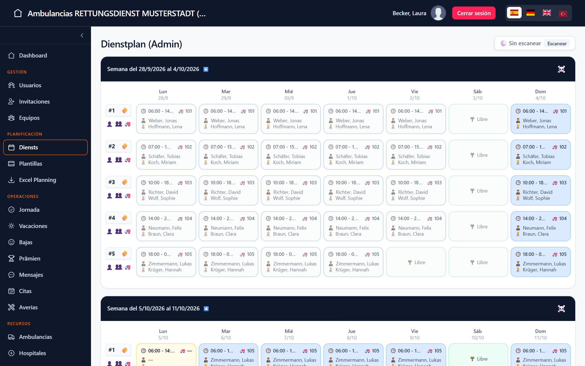
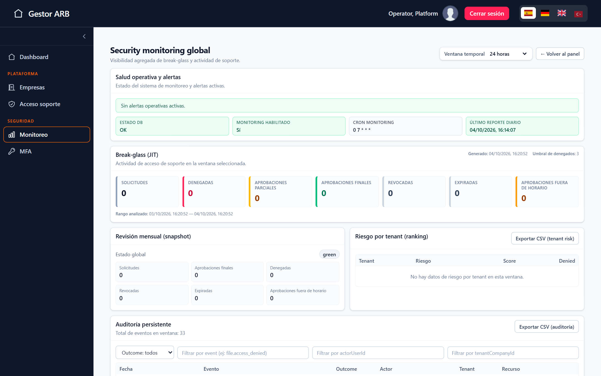
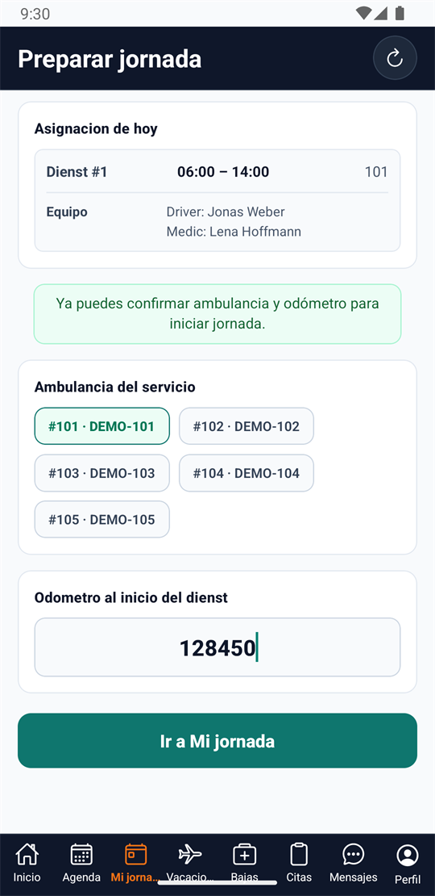

Ambulancias GoRuiz
Role: Sole developer — product scope, architecture, backend, web, mobile, testing and CI
Multi-tenant operations platform for ambulance and patient-transport companies: shift planning, crews, vehicles, absences, documents, payslips and bonuses. Web panel for admins and superadmin, including worker views; Expo mobile app for field crews; Node.js / Express API with REST and WebSocket, backed by MongoDB.
Personal project, designed and built over many months. It reached an advanced functional development stage and was deliberately archived before production deployment — it has no customers or production users. Demo available on request.
- Problem Small ambulance companies run rosters, crews and absences on spreadsheets and messaging apps.
- Approach One API serving a web panel and a mobile app, with tenant isolation and role-based access.
- Engineering 893 backend + 432 frontend tests, CI on every pull request, OpenAPI spec and documented technical debt.
Web panel · React + TypeScript · Mobile app · React Native / Expo



Local environment with fictitious demo data. UI shown in Spanish; German and English are also available.